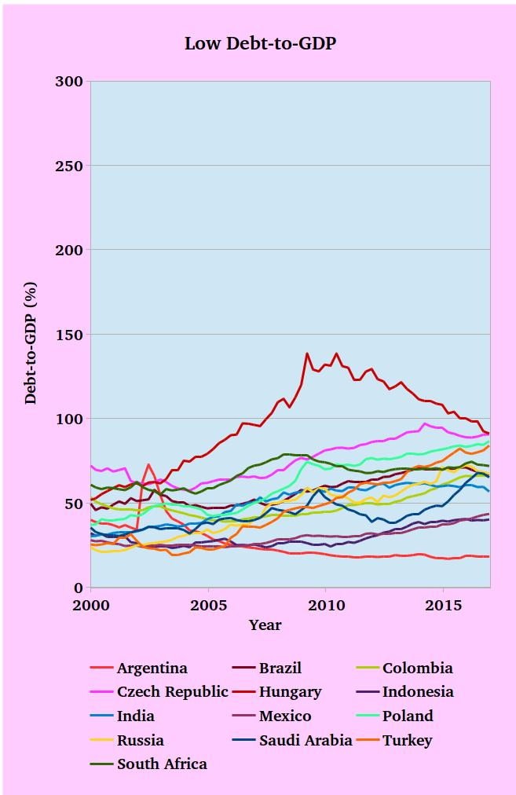

The historical evolution of the private debt-to-DGP ratio from 2000 to June 2017. Available countries are clustered in three groups of high debt ratio. The whole data set was extracted from the BIS database.
2 / 3
The historical evolution of the private debt-to-DGP ratio from 2000 to June 2017. Available countries are clustered in three groups of mid. debt ratio. The whole data set was extracted from the BIS database.
3 / 3

The historical evolution of the private debt-to-DGP ratio from 2000 to June 2017. Available countries are clustered in three groups of low debt ratio. The whole data set was extracted from the BIS database.